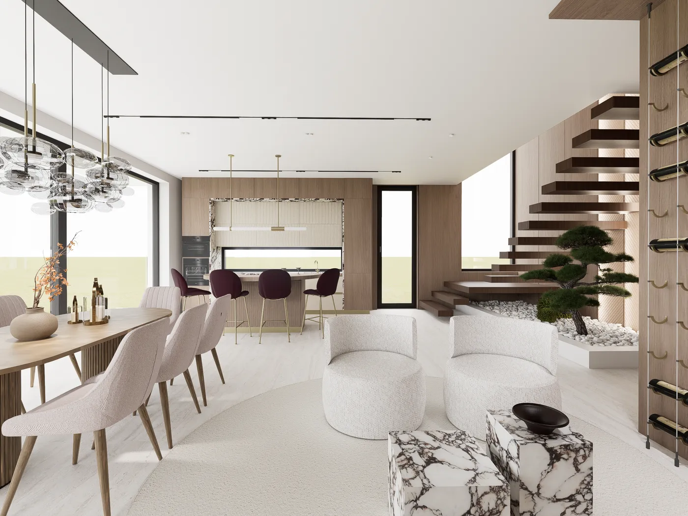
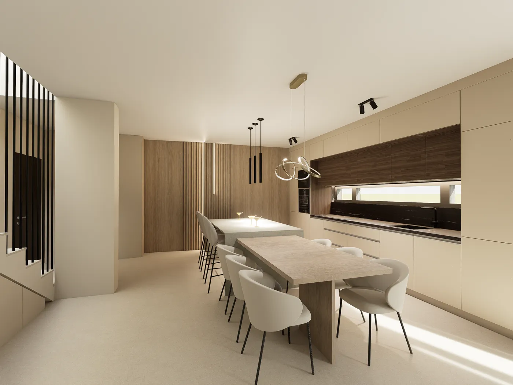
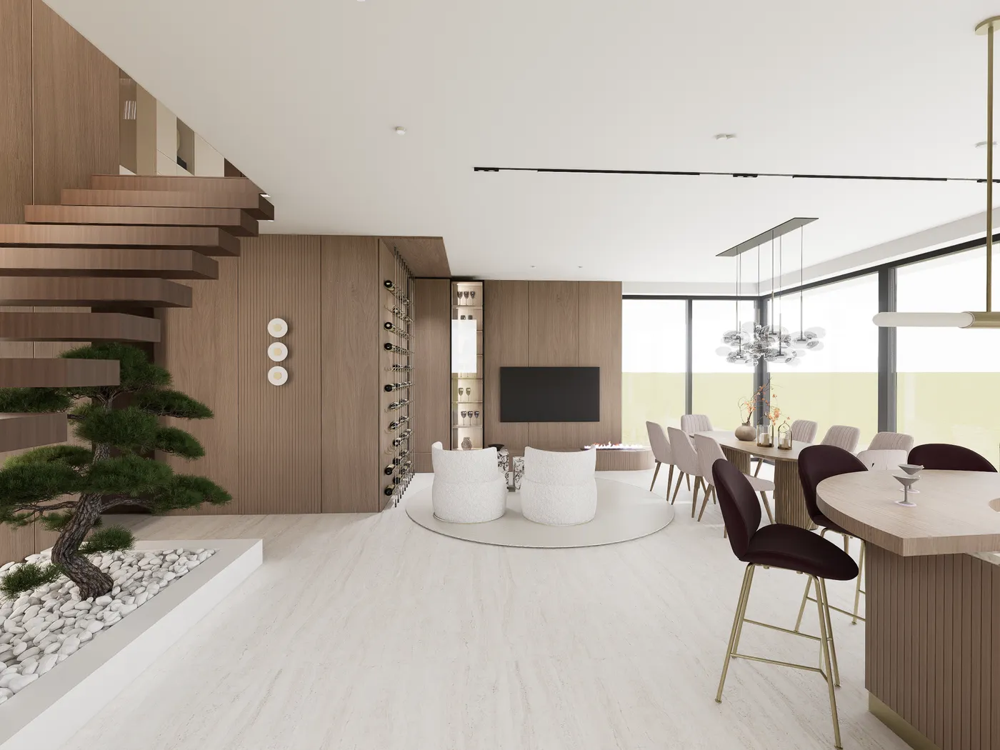
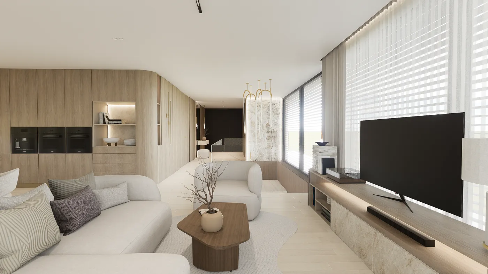
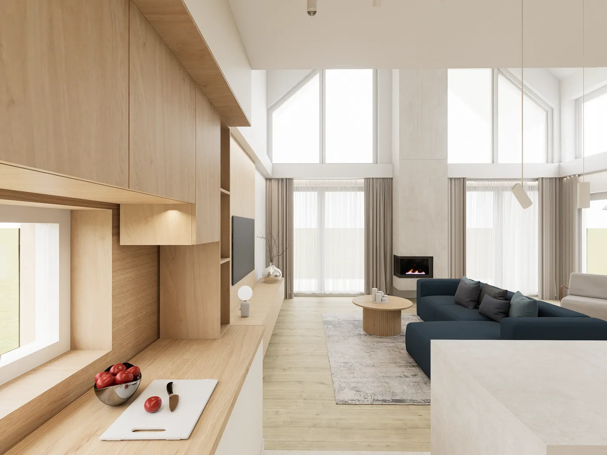

Referenciák
Kilenc otthon, családi házak és budapesti lakások. Minden képet én terveztem és rendereltem, még a kivitelezés előtt.
- Mogyoród, családi házCsaládi ház5 látványterv
- Pomáz, családi házCsaládi ház7 látványterv
- Pomáz, családi házCsaládi ház, két szint8 látványterv
- Délegyháza, családi házCsaládi ház7 látványterv
- Nyáregyháza, családi házCsaládi ház6 látványterv
- Budapest, XIV. kerületTársasházi lakás felújítása7 látványterv
- Budapest, XII. kerületTársasházi lakás fürdőszobájának felújítása3 látványterv
- Budapest, II. kerületTársasházi lakás felújítása4 látványterv
- Fót, családi házCsaládi ház felújítása7 látványterv

Így látod az otthonod, mielőtt egyetlen fal megmozdulna. Egészében és a legapróbb részletig.
Az otthonok

5 tér
- Nappali és lépcső
- Konyha és étkező
- Gyerekszoba boltíves fülkével
- Hálószoba
- TV-fal és közlekedő


